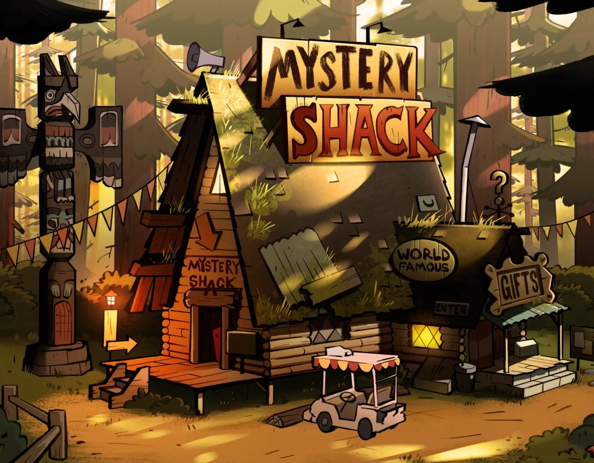

The Mystery Shack is a popular tourist attraction run by Grunkle Stan. It is filled with strange objects, unusual exhibits, and fake mysteries. Dipper and Mabel live here during their summer vacation and discover many secrets hidden in Gravity Falls.